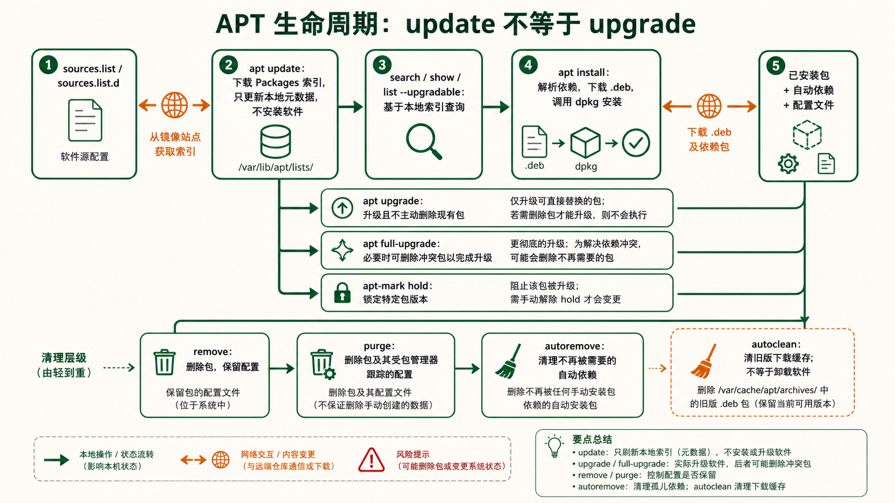
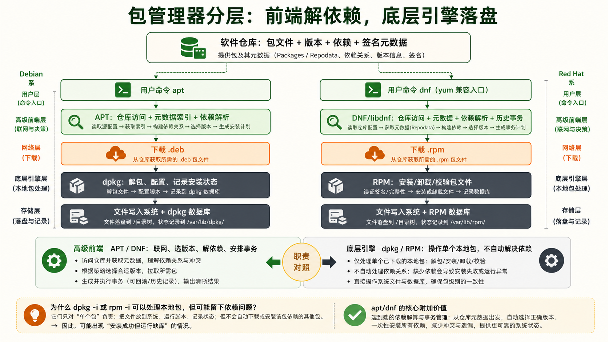
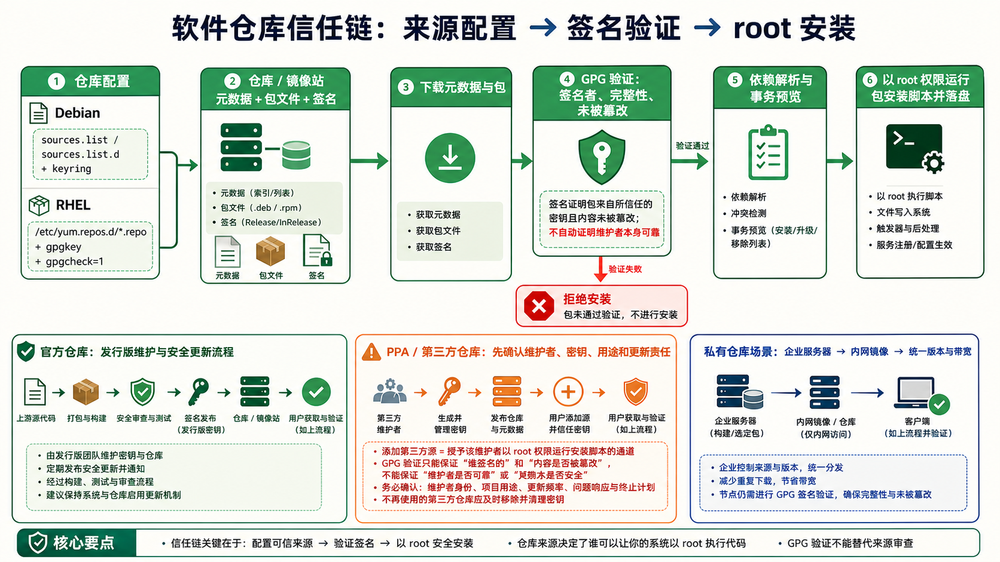
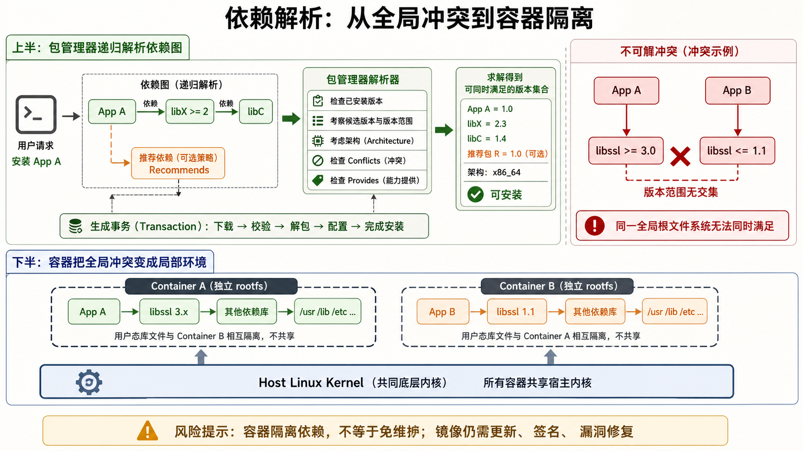

1APT 完整操作
Debian 系包管理全流程 —— update → install → purge → autoremove
核心问题：apt update 到底更新了什么？它和 apt upgrade 有什么区别？
这是 APT 新手最容易混淆的概念。apt update 不安装任何东西，只下载包的元数据索引。它从 /etc/apt/sources.list 中配置的仓库服务器下载一份"最新可用的包列表"——包括每个包的版本号、依赖关系、文件大小。apt upgrade 才真正去下载和安装更新。
打个比方：update 是去超市拿最新商品目录，upgrade 是把购物车里的东西买回来。
APT 日常工作流——从软件安装到彻底清理
阶段1：刷新包索引
apt update读取源列表，下载每个源的 Packages.gz 索引文件。执行完这一步，APT 才知道有哪些包可用、最新版本是多少。
阶段2：搜索与查看
apt search nginx
apt show nginx
apt list --upgradablesearch 在包名称和描述中搜索关键词；show 显示包的详细信息；list --upgradable 列出可升级的包。
阶段3：安装
apt install nginx -y-y 自动确认（生产环境脚本用）；不加 -y 会显示将要安装/升级/删除的包列表，让你手动确认。
阶段4：升级
apt upgrade
apt full-upgradeupgrade 不删除现有包；full-upgrade（旧称 dist-upgrade）在必要时会删除冲突包以完成升级。
卸载的三种级别
# 级别1：删除软件包，保留配置文件
apt remove nginx
# 删除 nginx 二进制文件，但 /etc/nginx/ 配置文件保留
# 未来重新安装时会沿用这些配置
# 级别2：彻底删除，含配置文件
apt purge nginx
# 删除一切——二进制、配置、数据目录（如果有定义）
# 相当于"从头来过"，重新安装不会残留旧配置
# 级别3：删除不再需要的依赖
apt autoremove
# 当安装 nginx 时自动装了 libssl（作为依赖），
# 卸载 nginx 后 libssl 可能不再被任何包需要
# autoremove 会找出并清理这些"孤儿"依赖
dpkg —— APT 的底层引擎
APT 本质上是 dpkg 的前端。APT 负责解析依赖、从仓库下载 .deb 文件，然后调用 dpkg 进行实际的安装/卸载操作。
# dpkg 常用命令（底层操作，不处理依赖关系）
dpkg -l # 查看所有已安装的包（状态标志：ii=已安装 rc=已删除残留配置）
dpkg -l | grep nginx # 过滤查看某个包
dpkg -s nginx # 查看包的详细状态信息（版本、依赖、描述、配置文件列表）
dpkg -L nginx # 列出一个包安装的所有文件（list files）
# 反向查询：某个文件属于哪个包
dpkg -S /usr/sbin/nginx # 搜索——/usr/sbin/nginx 是哪个包安装的
dpkg -i package.deb # 本地安装 .deb 文件（注意：不自动解决依赖）
dpkg -r nginx # 移除包（保留配置）
dpkg -P nginx # 彻底清除（含配置）
# 查看包的下载缓存
ls /var/cache/apt/archives/ # APT 下载的 .deb 包缓存在这里锁定包版本——防止自动升级
# 锁定某个包，阻止升级
apt-mark hold nginx # 锁定 nginx，后续 upgrade 不会升级它
apt-mark unhold nginx # 解锁
apt-mark showhold # 查看所有被锁定的包apt full-upgrade 可能会失败或产生依赖冲突。apt update && apt upgrade -y && apt autoremove -y && apt autoclean。autoclean 清理本地缓存的旧版 .deb 包（只保留当前版本），释放磁盘空间。2YUM / DNF 完整操作
Red Hat 系包管理全流程 —— YUM 的历史与 DNF 的新生
核心问题：DNF 和 YUM 是什么关系？用哪个？
YUM (Yellowdog Updater, Modified) 曾是 Red Hat / CentOS / Fedora 的默认包管理器，诞生于 2003 年。随着 RPM 生态膨胀，YUM 的性能瓶颈（Python 2 依赖、慢速解析依赖、内存占用大）日益突出。DNF (Dandified YUM) 从 Fedora 18 起步，用 C 语言重写核心库（libdnf），Python 3 编写 CLI，彻底解决了 YUM 的性能问题。从 RHEL 8 / CentOS 8 开始，DNF 正式取代 YUM。
好消息是：DNF 的命令行语法与 YUM 几乎完全兼容。你在 CentOS 7 上学的 yum 命令，在 CentOS 8+ 上把 yum 换成 dnf 即可。系统甚至保留了 /usr/bin/yum 指向 dnf 的符号链接。
DNF/YUM 日常工作流
阶段1：检查更新
dnf check-update检查哪些包有新版本可用（只查看、不安装）。类似 apt update + apt list --upgradable 的结合体。
阶段2：搜索与查看
dnf search nginx
dnf info nginx
dnf list installedsearch 搜索包名和描述；info 显示版本/架构/大小/仓库/描述；list installed 列出已安装的包。
阶段3：安装与卸载
dnf install nginx -y
dnf remove nginxDNF 会自动处理依赖：安装时拉取所有依赖，卸载时也会提示连带卸载哪些不再需要的包。
阶段4：升级
dnf upgrade
dnf upgrade --securityupgrade 升级所有包；--security 只升级安全相关的更新（生产环境推荐）。
DNF 独有的强大功能
# === 历史操作管理（DNF 的杀手级功能）===
# 查看安装/卸载/升级的历史记录
dnf history
# 输出示例：
# ID | Command line | Date and time | Action(s) | Altered
# ---------------------------------------------------|-------------------|----------------|--------
# 5 | install nginx | 2026-07-30 10:00 | Install | 12
# 4 | remove vim | 2026-07-29 15:30 | Remove | 1
# 3 | upgrade | 2026-07-28 09:00 | Upgrade | 45
# 查看某次操作的详细信息
dnf history info 5 # 查看第5次操作具体装了什么包
# 回滚某次操作！！！
dnf history undo 5 # 撤销第5次操作（如果5是 install nginx，则卸载它和它的依赖）
dnf history rollback 4 # 回滚到第4次操作后的状态
# === 包组管理 ===
dnf group list # 列出所有包组（如 "Development Tools"、"Web Server"）
dnf group install "Development Tools" # 一键安装开发工具组（gcc/make/git 等）rpm —— YUM/DNF 的底层引擎
# rpm 常用命令（底层操作，不处理依赖关系）
rpm -qa # 查询所有已安装的包
rpm -qa | grep nginx # 过滤查看
rpm -qi nginx # 查看包的详细信息（info）
rpm -ql nginx # 列出包安装的所有文件（list files）
rpm -qc nginx # 只看配置文件（config files）
rpm -qd nginx # 只看文档文件（documentation）
# 反向查询
rpm -qf /usr/sbin/nginx # 这个文件属于哪个包（query file）
# 验证包的完整性
rpm -V nginx # 检查安装后的文件是否被修改
# 输出符号：S=大小变了 M=权限变了 5=MD5变了 D=设备号变了 L=链接路径变了
# U=属主变了 G=属组变了 T=修改时间变了
# 本地安装/升级/卸载
rpm -ivh package.rpm # install
rpm -Uvh package.rpm # upgrade（如果未安装则安装）
rpm -e nginx # erase（卸载）
rpm -e --nodeps nginx # 忽略依赖强制卸载（危险！）
dnf provides */nginx 或 dnf provides /usr/bin/htop。它会搜索所有仓库的包内容，告诉你哪个包包含这个文件。APT 对应的命令是 apt-file search nginx（需要先 apt install apt-file && apt-file update）。3仓库管理
软件包的"来源地"——仓库配置是包管理的根基
运维问题：apt install 怎么知道去哪里下载软件包？
APT 会读取 /etc/apt/sources.list 以及 /etc/apt/sources.list.d/ 下的源配置。旧格式使用 .list 的 deb 行，新版 Ubuntu 也常用 .sources 的 deb822 格式；先查看本机现有文件，再按该发行版的格式修改，不要机械覆盖。
APT 仓库配置详解
# /etc/apt/sources.list 中的一行（Debian/Ubuntu）
deb https://archive.ubuntu.com/ubuntu/ noble main restricted universe multiverse
# ^ ^ ^ ^ ^
# | | | | 仓库组件（component）
# | | | 发行版代号（noble = 24.04；以本机版本为准）
# | 仓库 URL |
# 类型（deb=二进制包, deb-src=源码包）
# 仓库组件（Component）含义：
# main → Ubuntu 官方维护的开源软件（完全支持）
# restricted → 官方维护的专有驱动（如 NVIDIA 驱动）
# universe → 社区维护的开源软件（不保证安全更新时效）
# multiverse → 非自由软件（许可证受限）PPA —— 个人包仓库（Personal Package Archive）
PPA 是 Launchpad 平台提供的非官方仓库，由个人或小团队维护。当官方仓库没有你需要的软件或版本太旧时，通过 PPA 安装。
# 添加 PPA 并安装软件
add-apt-repository ppa:deadsnakes/ppa # 添加 Python 新版本的 PPA
apt update # 更新包索引（让 APT 知道新源的包）
apt install python3.11 # 安装 PPA 中的包
# 删除 PPA
add-apt-repository --remove ppa:deadsnakes/ppa
# 查看已添加的 PPA
ls /etc/apt/sources.list.d/ # 每个 PPA 对应一个 .list 文件YUM/DNF 仓库配置详解
# 仓库配置文件位于 /etc/yum.repos.d/*.repo
# /etc/yum.repos.d/nginx.repo 示例
[nginx-stable]
name=nginx stable repo
baseurl=https://nginx.org/packages/rhel/$releasever/$basearch/
gpgcheck=1
enabled=1
gpgkey=https://nginx.org/keys/nginx_signing.key
module_hotfixes=true
# 字段说明：
# [repo-id] → 仓库的唯一标识符
# name → 仓库的人类可读名称
# baseurl → 包文件的下载 URL
# mirrorlist → 镜像列表 URL（与 baseurl 二选一）
# gpgcheck=1 → 强制 GPG 签名验证（强烈建议启用）
# enabled=1 → 该仓库是否启用
# gpgkey → GPG 公钥 URL 或本地路径
添加仓库的实战操作
# === Debian/Ubuntu ===
# 第三方仓库示意：先从供应商文档确认 URL、密钥指纹和发行版代号
# 密钥放在专用 keyring，源条目用 signed-by 限定其信任范围
sudo install -d -m 0755 /etc/apt/keyrings
# 验证供应商密钥后保存为 /etc/apt/keyrings/vendor.gpg
# deb [signed-by=/etc/apt/keyrings/vendor.gpg] https://packages.example.com/ubuntu noble main
# 不再使用 apt-key，也不要把第三方密钥放进全局 trusted.gpg.d
# === RHEL/CentOS ===
# 方法1：yum-config-manager（需要 yum-utils）
yum install -y yum-utils
yum-config-manager --add-repo https://download.docker.com/linux/centos/docker-ce.repo
# 方法2：手动创建 .repo 文件
cat > /etc/yum.repos.d/example.repo << 'EOF'
[example]
name=Example Repository
baseurl=https://packages.example.com/rhel/$releasever/$basearch/
enabled=1
gpgcheck=1
gpgkey=https://packages.example.com/gpg.key
EOF仓库优先级管理
# 当同一个包在多个仓库中存在时，哪个优先？
# APT —— 使用 /etc/apt/preferences 设置优先级
# 格式：Pin-Priority 越大越优先（默认 500）
# DNF —— 在 .repo 文件中设置 priority
[nginx-stable]
priority=1 # 数字越小优先级越高（1-99，默认99）
# 需要 yum-plugin-priorities 插件apt-mirror 或 reprepro，YUM/DNF 用 createrepo 创建仓库元数据。所有服务器指向内网仓库，统一管控软件版本，减少外网带宽消耗。4依赖解析与升级
依赖地狱的成因与解法——包管理的"看不见的博弈"
核心问题：为什么"apt install A"会自动装 B 和 C，而我根本没提它们？
因为 A 在它的包描述中声明了"我要用 B 提供的功能"和"C 提供的功能"。包管理器在安装前会递归解析整个依赖图——如果 B 又依赖 D，D 又依赖 E……这条链上的所有包都会被自动拉取。这就是包管理器最核心的价值：自动解决依赖关系。
如果脱离包管理器手工安装软件，就必须自己核对 libssl、libpcre、zlib 等依赖及其兼容版本。包管理器能自动求解并安装仓库中声明的依赖，但跨仓库版本冲突和运行时兼容问题仍需管理员判断。Windows 也有包管理工具，不能简单把它等同于“没有包管理器”。
依赖关系的两种类型
| 依赖类型 | APT 术语 | RPM 术语 | 含义 |
|---|---|---|---|
| 必须依赖 | Depends |
Requires |
没有这个依赖，包完全无法工作。安装时强制拉取。 |
| 推荐依赖 | Recommends |
Recommends |
没有也能用，但功能会受限。默认会安装，但可以跳过。 |
| 建议依赖 | Suggests |
Suggests |
锦上添花。默认不安装，纯粹是提示。 |
| 冲突 | Conflicts |
Conflicts |
不能和某个包同时安装（如两个 MTA 邮件服务器不能共存）。 |
| 替代 | Provides |
Provides |
声明"我能替代某个虚拟包"。如 sendmail 和 postfix 都 Provides: mail-transport-agent。 |
依赖地狱（Dependency Hell）——包管理的阿克琉斯之踵
依赖地狱的根本原因是版本冲突：A 要求 libssl >= 3.0，B 要求 libssl <= 1.1。两者都声称需要 libssl，但版本范围不重叠——APT 和 DNF 都无力解决这种冲突。
# 依赖地狱的典型场景
$ apt install application-x
The following packages have unmet dependencies:
application-x : Depends: libssl (>= 3.0) but 1.1.1f-1ubuntu2 is to be installed
E: Unable to correct problems, you have held broken packages.
# 为什么会出现这种情况？
# 1. 混用了不同发行版的仓库（如 Debian stable 加了 sid 的源）
# 2. 手动安装了不被系统仓库支持的 .deb 包
# 3. 长时间未更新，系统版本和上游仓库脱节
升级策略与最佳实践
# === 保守升级（生产环境推荐）===
# 1. 先查看有哪些更新
apt list --upgradable # APT
dnf check-update # DNF
# 2. 逐类升级（而不是一股脑全升）
apt install --only-upgrade nginx # 只升级 nginx
dnf update nginx # 只升级 nginx
# 3. 安全更新优先（DNF）
dnf updateinfo list # 查看安全公告
dnf upgrade --security # 只升级安全相关更新
# 4. 内核升级后不要立即重启
# 使用 ksplice（Oracle）或 livepatch（Canonical）
# 或等待维护窗口统一重启排错：处理"已安装但损坏"的包
# 中断的安装导致后续操作全部失败时
apt --fix-broken install # APT：修复损坏的依赖关系
apt install -f # 同上（-f = --fix-broken）
dnf distro-sync # DNF：将系统同步到仓库状态（强制对齐版本）
# 清除本地缓存重建（APT）
apt clean # 清除所有缓存
apt update # 重新拉取元数据
# 清除 DNF 缓存
dnf clean all
dnf makecachedpkg -l > before-upgrade.txt；④ 在 tmux/screen 会话中执行升级——防止 SSH 断开导致升级中断（中断的升级状态很难修复）；⑤ 升级后对比版本号 diff before-upgrade.txt after-upgrade.txt；⑥ 验证关键服务 systemctl status nginx curl -I localhost。注解
CLI · Command-Line Interface 命令行界面